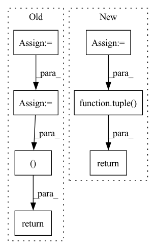

Pattern ID :41005
Before Change
p_opts = np.zeros(b_shape + (n_chan_out,), dtype=np.int64)
for m in np.ndindex(b_shape):
dum, p_opt = _linear_sum_assignment_with_inf(-SIR_npy[m])
SDR_out[m] = SDR[m + (dum, p_opt)]
SIR_out[m] = SIR[m + (dum, p_opt)]
SAR_out[m] = SAR[m + (dum, p_opt)]
p_opts[m] = p_opt
p_opts = pt.from_numpy(p_opts).to(SDR_out.device)
return SDR_out, SIR_out, SAR_out, p_opts
def _linear_sum_assignment_with_inf(
cost_matrix: np.ndarray,After Change
Solve the permutation in numpy for now
loss_mat = target_loss_matrix // more consice name
b_shape = loss_mat.shape[:-2]
n_chan_ref, n_chan_est = loss_mat.shape[-2:]
n_chan_out = min(n_chan_ref, n_chan_est)
if n_chan_ref > n_chan_est:
loss_mat = loss_mat.transpose(-2, -1)
args = list(args)
for i, arg in enumerate(args):
args[i] = arg.transpose(-2, -1)
loss_mat_npy = loss_mat.cpu().detach().numpy()
loss_out = loss_mat.new_zeros(b_shape + (n_chan_out,))
args_out = [arg.new_zeros(b_shape + (n_chan_out,)) for arg in args]
p_opts = np.zeros(b_shape + (n_chan_out,), dtype=np.int64)
for m in np.ndindex(b_shape):
dum, p_opt = _linear_sum_assignment_with_inf(loss_mat_npy[m])
loss_out[m] = loss_mat[m + (dum, p_opt)]
for i, arg in enumerate(args):
args_out[i][m] = arg[m + (dum, p_opt)]
p_opts[m] = p_opt
if return_perm:
return (loss_out,) + tuple( args_out) + (p_opt,)
else:
return (loss_out,) + args_out
In pattern: SUPERPATTERN
Frequency: 3
Non-data size: 7
Instances Fragment ID: 115627220
Project Name: fakufaku/torchiva
Commit Name: d2b2bceef6944715a6274920e6ec7b0374367ccd
Time: 2022-01-31
Author: robin.scheibler@linecorp.com
File Name: torchiva/metrics.py
M Class Name: AnonimousClass
N Class Name: AnonimousClass
M Method Name: _solve_permutation(1)
N Method Name: _solve_permutation(3)
M Parent Class:
N Parent Class:
M File Name: torchiva/metrics.py
N File Name: torchiva/metrics.py
M Start Line: 204
M End Line: 234
N Start Line: 150
N End Line: 182
Before Change
labels = [[item[1]] for item in batch]
values = np.concatenate(values, axis=0).astype(_DTYPE)
values = torch.from_numpy(values)
labels = np.concatenate(labels, axis=0).astype(_DTYPE)
labels = torch.from_numpy(labels)
return values, labels
def intervals_iou(itv_a:Tensor, itv_b:Tensor, iou_type="iou") -> Tensor:
NOT finished, NOT checked,After Change
n_fields = len(batch[0])
except:
raise ValueError("No data")
ret = []
for i in range(n_fields):
values = [[item[i]] for item in batch]
values = np.concatenate(values, axis=0).astype(_DTYPE)
values = torch.from_numpy(values)
ret.append(values)
return tuple( ret)
def intervals_iou(itv_a:Tensor, itv_b:Tensor, iou_type="iou") -> Tensor:
NOT finished, NOT checked, Fragment ID: 115627200
Project Name: deeppsp/torch_ecg
Commit Name: ee05a1edb7783d4928b0eea028455c71eb1fe050
Time: 2021-10-14
Author: wenh06@gmail.com
File Name: torch_ecg/utils/utils_nn.py
M Class Name: AnonimousClass
N Class Name: AnonimousClass
M Method Name: default_collate_fn(1)
N Method Name: default_collate_fn(1)
M Parent Class:
N Parent Class:
M File Name: torch_ecg/utils/utils_nn.py
N File Name: torch_ecg/utils/utils_nn.py
M Start Line: 515
M End Line: 521
N Start Line: 513
N End Line: 523
Before Change
// This includes the vec-env dimension (first)
stack_dimension = 1 if channels_first else -1
repeat_axis = 0 if channels_first else -1
low = np.repeat(observation_space.low, n_stack, axis=repeat_axis)
stackedobs = np.zeros((num_envs,) + low.shape, low.dtype)
return channels_first, stack_dimension, stackedobs, repeat_axis
def stack_observation_space(self, observation_space: spaces.Box) -> spaces.Box:
Given an observation space, returns a new observation space with stacked observationsAfter Change
// This includes the vec-env dimension (first)
stack_dimension = 1 if channels_first else -1
repeat_axis = 0 if channels_first else -1
stacked_shape = list(observation_space.shape)
stacked_shape[repeat_axis] *= n_stack
return channels_first, stack_dimension, tuple( stacked_shape) , repeat_axis
def stack_observation_space(self, observation_space: Union[spaces.Box, spaces.Dict]) -> Union[spaces.Box, spaces.Dict]:
Fragment ID: 115627231
Project Name: dlr-rm/stable-baselines3
Commit Name: 2e4a45020ec619b09e2b1ccff14fa4f2c291dc77
Time: 2023-02-06
Author: 45557362+qgallouedec@users.noreply.github.com
File Name: stable_baselines3/common/vec_env/stacked_observations.py
M Class Name: StackedObservations
N Class Name: StackedObservations
M Method Name: compute_stacking(3)
N Method Name: compute_stacking(4)
M Parent Class: Subscript
N Parent Class:
M File Name: stable_baselines3/common/vec_env/stacked_observations.py
N File Name: stable_baselines3/common/vec_env/stacked_observations.py
M Start Line: 44
M End Line: 79
N Start Line: 94
N End Line: 98